Commands and Programming Reference Chapter 1
Every command in Eviews falls into one of four categories:
- object declaration/assignment,
- object view/procedure view,
- interactive commands (these create unnamed objects),
- auxiliary commands (these are commands that do not specifically pertain to objects, eg 'store').
Command Capture:
when you point and click this window captures the commands being used. To activate: display command capture window by clicking on Window > Display Command Capture Window from the main EViews menu.
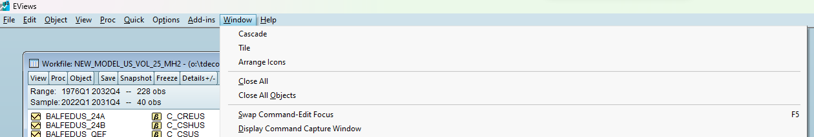 Figure 1.1: How to display the Command Window
To echo any commands in this window, go to Options > General Options and click on the Command settings.
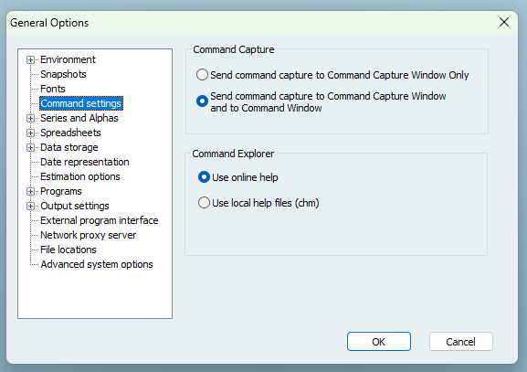
Figure 1.2: Setting up the Command Window to Echo Commands
You can then save the contents by copy and paste or right clicking and saving directly. Some EVews commands are not capture enabled (because of course there are exceptions, EViews loves exceptions to their rules!).
Note
The insertion cursor can be at any place in the line of code you wish to execute, once the user hits enter that line will execute (even in the middle of a line of code).
Scroll up and down previous commands using CRTL + UP or CRTL + DOWN respectively.
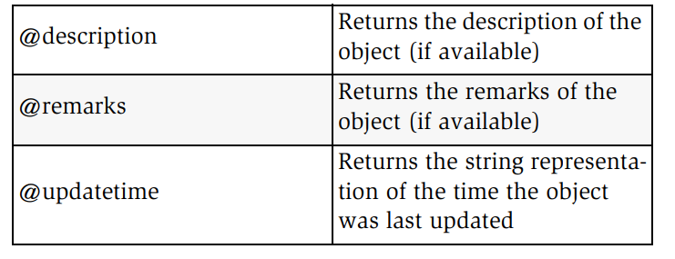
The Command Explorer window (appearing on the far left of the screen) allows for a way to display context specific documentation while working in Eviews.
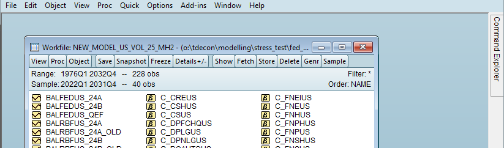 Once the window is opened, clicking on the name of an object type will open a documentation page for that object in a browser window.
For example, if a user wanted to know what the command @recode does they can go to the command explorer and this will take them to the Eviews website:
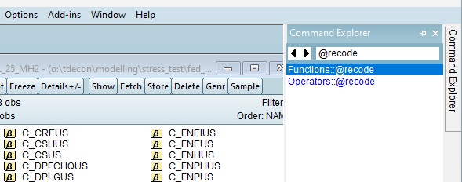
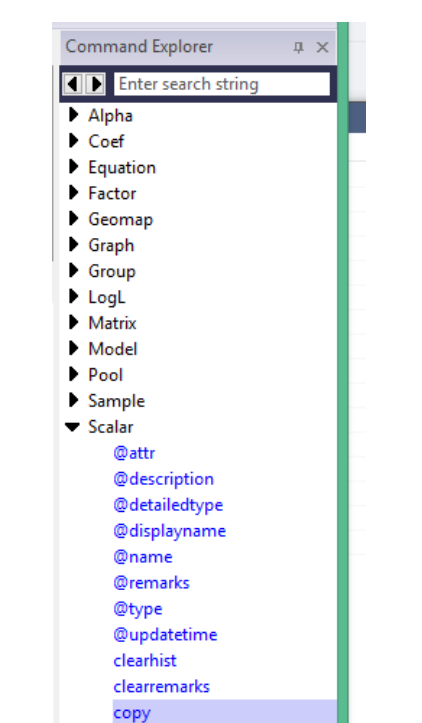
Note the wildcard "*" can be used for search for commands.
If a workfile is open you can use CRTL + SPACE to autocomplete commands and for objects (the manual claims this but it can be buggy).
Many commands can be linked together and saved as a program. File > New > Program will start a new program.
Object declaration:
Object_type(options) object_name, below are all the possible types of object in Eviews.
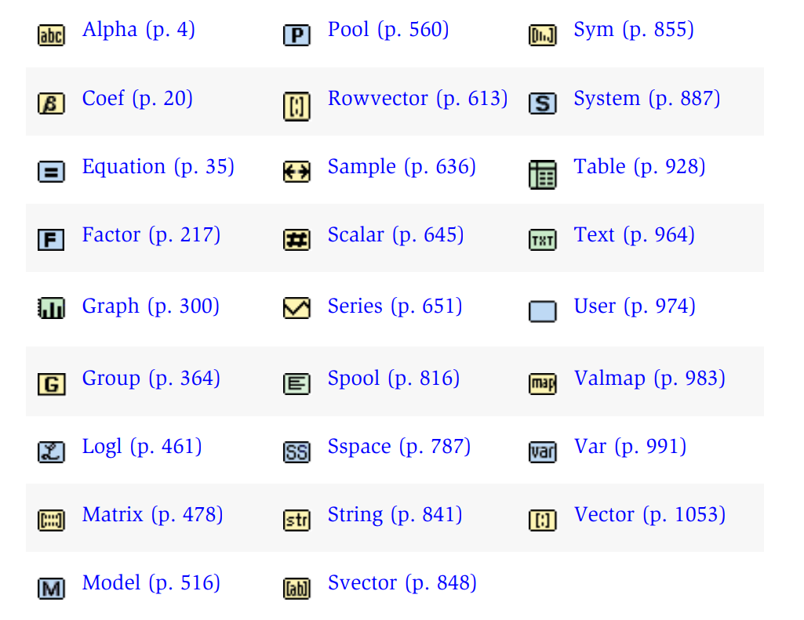
The various object types :
To create an object we start the code with the object type.
For example, to create a series called lgdp we would use:
series lgdp
To create an equation called eq1 one would use:
equation eq1
Declaring matrices and coefs:
matrix(m, n) x creates an empty m by n matrix named x
coef(10) results creates a 10 element coefficient vector named results
Object assignment: "=" assigns a value or values to an object.
For example:
series new_series = 0 creates a series (whose length is determined by the sample size using the smpl function) which contains zero as every entry.
Note
In order to tell Eviews which data to work on use the smpl function like so: smpl 1990q1 2025q1. Users can select the entire sample using smpl @all and can select from the beginning or to the end useing @first and @last respectively.
For example, to select from the second quarter of 2005 to the end of the data series type
smpl 2005q2 @last
When ready to work with the entire data set remember to use
smple @all
Warning
If you have the sample set (using the smpl command) to only a part of the data set then any commands given will apply only to that sample of the dataset! Always use smpl @all when finished altering a subsample of the dataset.
Object Commands
These can be used to modify existing objects, for example
eq1.ls log(cons) c x1 x2 this estimates an equation by OLS (LS for 'least squares")
To add to systems or groups use the following (similar to methods in Python OOP)
sys1.append y = c(1) c(2)*x this adds the equation to the system called sys1
group01.add gdp cons inc g x this adds the variables to the left of .add to the group named goup01
We can change the values in a series in a single command by specifying the sample period
smpl @first 1979
eries dummy = 1 this will make all values from the first obs to the obs at 1979 to equal 1
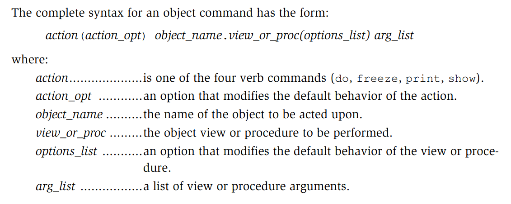
Commands:
show displays, do executes procedures, if the object window is already open then show is the same as do, freeze creates a table or graph of the object view and print prints the object view window.
Note
The show action is assumed for view commands and do is assumed for procedures.
For example gdp.line is the same as
show gpd.line (which creates a line graph of the variable named gdp)
Another example:
eq1.ls cons c gdp is the same as
do eq1.ls cons gdp
The print command can be used to print and the print(l)
Freeze:

freeze gdp.linecreates and untitled graph or table from a view specification, but
freeze(figure1) gdp.bar creates a bar graph named figure 1.
Some examples of object commands that can be used on series:
Sheet, hist, freq,bar, correl, lrvar, uroot, stats, label(r) shows a spreadsheet, histogram, bar graph, correlation, unit root test, or labels the series respectively.
Every object has native Data Members which can be retrieved using the following after "." and the variable name
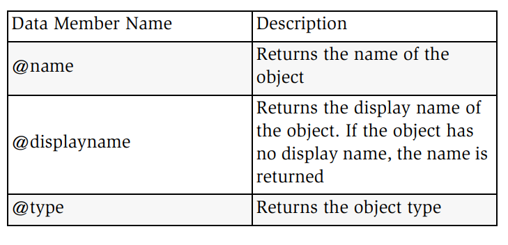
Groups also have @count which returns the number of objects in the group.
Equations have members like @r (r -squared) or @f(f-statistic).
Interactive commands: these create new unnamed objects:
For example:
ls y c x1 x2 will run OLS y = c + beta_1x1 + beta_2x2 and create an untitled equation object to hold the results
Example 2:
scatt x y creates a group and a scatterplot (unnamed).
Warning
Unnamed object scannot be referenced by name, saved to disk or deleted EXCEPT though the graphical Windows interface! Using named objects is typically preferred if using code to control Eviews.
In contrast to the above we can do the following
equation eq1.ls y cy x1 x2 and now the equation is named eq1
We can also do:
group mygroup x y now the group is named mygroup
mygroup.scat
Aux commands:
Aux commands are commands such as "store" (to save a file) that do not pertain to a particular object . Syntax: command(option_list) argument_list
Workfiles and Databases
wfcreate this creates a new workfile (followed by the name of the new workfile and an option for frequency of the data)
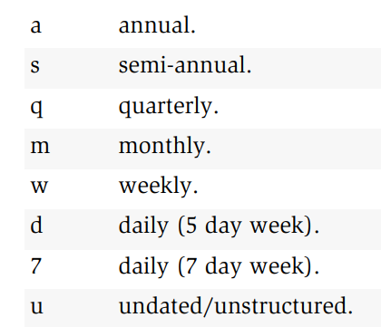
For example:
wfcreate macro1 u 1 1000 creates a workfile called macro1 which is undated/unstructured and contains 1000 obs
while
wfcreate macro1 q 1965q1 2025q4 creates a quarterly workfile from the first quarter of 1965 to the last quarter of 2025.
The letters "wf" precede workfile commands, thus in order to open a workfile we use wfopen, to save use wfsave (eg: wfsave a:\my_work_file).
Note
To close a workfile we use close my_work_file (not wfclose as one might guess)
Databases
Databases are referred to as 'db' so dpcreate creates a database while dbopenopens a database etc (TODO: Add database commands)
Note
db ttself is a command. db C:\evdata\usdb opens a data base called usdb if it already exists and creates one if it does not exist.
Other useful commands: dbrename, dbdelete, dbcopy
Managing Objects:
Copying:
copy source_name destination_name
Note
The source_name and destination_name can contain a full workfile address starting with a page name and then a variable name. EG copy page1/var1 page2/var2 would copy var1 on page1 to var2 on page2.
Note
Eveiws supports wildcards: * for multiple characters and ? for single characters. The patterns must match (see below).
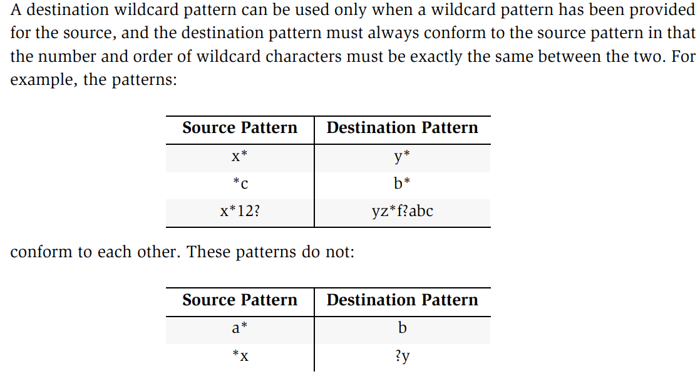
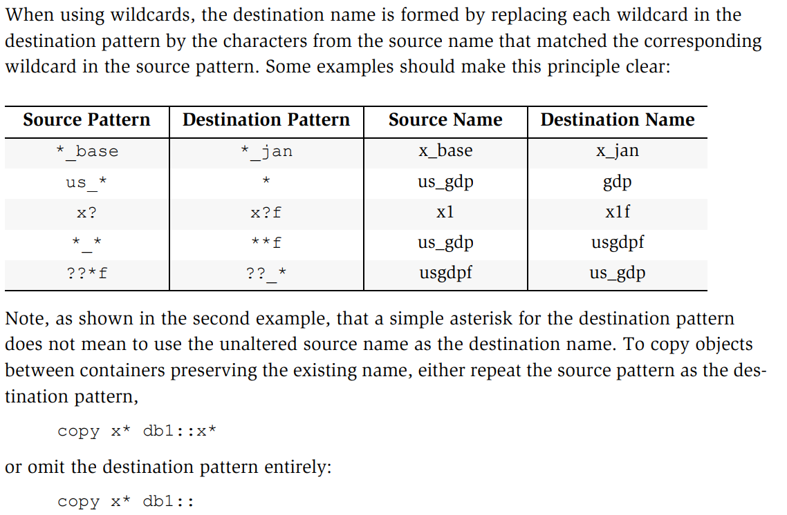
rename source_name destination_name
delete name_pattern deletes the objects with this PATTERN (can use wildcards here)
Fetch:
fetch(option_list) object1 object2 (however many objects) to specify a particular database use the "d=" option or the "::" extension (same for the store command).
TODO : add more detail on how to access databases.
@ functions and their Definitions
@recode(s,x,y) recode by condition. If s is true then it returns x, and s is false it returns y
@isna(x) equal to NA. This functin returns 1 if x is equal to NA and 0 otherwise.